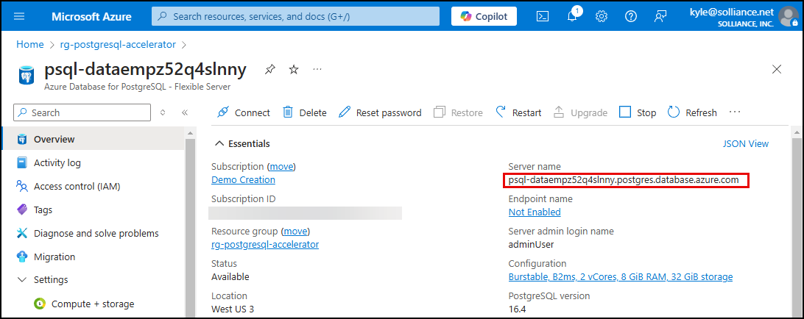
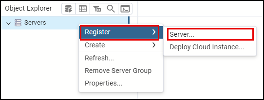
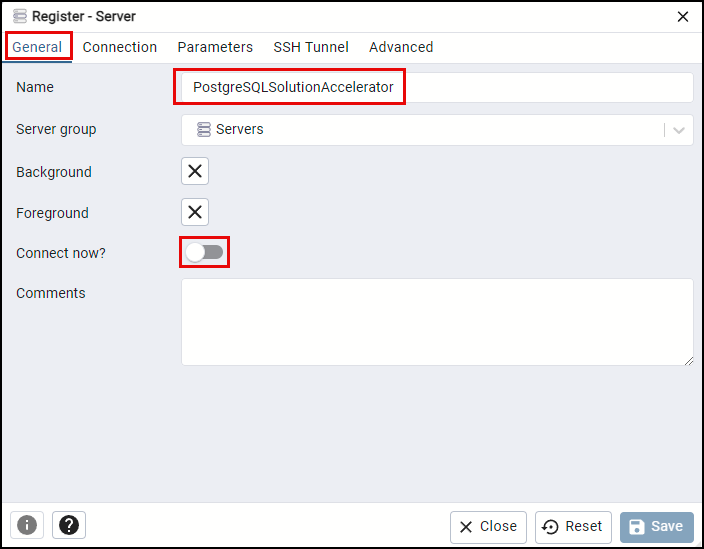
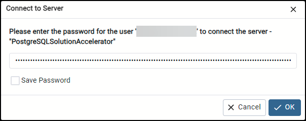

2.7 開発環境のセットアップ¶
このステップでは、Visual Studio Code で Python 開発環境を設定します。このステップの終わりには、以下が完了しているはずです。
- Python 仮想環境を作成した
-
requirements.txtから必要な Python ライブラリをインストールした - Woodgrove API プロジェクトに
.envファイルを作成し、内容を入力した - pgAdmin を使用してデータベースに接続した
Python 仮想環境を作成する¶
Python の仮想環境は、クリーンで整理された開発スペースを維持するために不可欠であり、個々のプロジェクトが他のプロジェクトから独立した依存関係のセットを持つことを可能にします。これにより、異なるプロジェクト間の競合を防ぎ、開発ワークフローの一貫性を確保します。仮想環境を使用することで、パッケージのバージョンを簡単に管理し、依存関係の衝突を避け、プロジェクトをスムーズに実行できます。これは、コーディング環境を安定して信頼できるものに保ち、開発プロセスをより効率的で問題が少ないものにするベストプラクティスです。
-
PostgreSQL Solution Accelerator: Build your own AI Copilot プロジェクトを開いている Visual Studio Code に戻ります。
-
Visual Studio Code で新しいターミナルウィンドウを開き、リポジトリの
src/apiフォルダーにディレクトリを変更し、次のコマンドをターミナルプロンプトで実行して.venvという名前の仮想環境を作成します。1 2
cd src/api python -m venv .venv上記のコマンドは、
apiフォルダーの下に.venvフォルダーを作成し、このラボ全体で使用できるapiプロジェクト専用の Python 環境を提供します。 -
仮想環境をアクティブにします。
OS とシェルに応じて適切なコマンドを選択してください。
プラットフォーム シェル 仮想環境をアクティブにするコマンド POSIX bash/zsh source .venv/bin/activatefish source .venv/bin/activate.fishcsh/tcsh source .venv/bin/activate.cshpwsh .venv/bin/Activate.ps1Windows cmd.exe .venv\Scripts\activate.batPowerShell .venv\Scripts\Activate.ps1macOS bash/zsh source .venv/bin/activate -
ターミナルプロンプトでコマンドを実行して、仮想環境をアクティブにします。
必要なPythonライブラリのインストール¶
src\apiフォルダー内のrequirements.txtファイルには、ソリューションアクセラレーターのPythonコンポーネントを実行するために必要なPythonライブラリのセットが含まれています。
必要なライブラリを確認
リポジトリ内のsrc\api\requirements.txtファイルを開いて、使用されている必要なライブラリとバージョンを確認してください。
-
VS Codeの統合ターミナルウィンドウから、次のコマンドを実行して仮想環境に必要なライブラリをインストールします。
1pip install -r requirements.txt
.envファイルの作成¶
接続文字列やエンドポイントなどの構成値は、Azureサービスとアプリケーションが連携するために必要で、Azure App Configurationサービスにホストされています。これらの値をアプリケーションが取得できるようにするために、そのサービスのエンドポイントを提供する必要があります。エンドポイントを環境変数としてホストするために、.envファイルを使用します。これにより、Woodgrove APIをローカルで実行できるようになります。.envファイルはプロジェクトのsrc\api\appフォルダー内に作成されます。
-
VS Codeで、Explorerパネル内の
src\api\appフォルダーに移動します。 -
appフォルダーを右クリックし、コンテキストメニューからNew file...を選択します。 -
VS CodeのExplorerパネル内で、新しいファイルの名前として
.envを入力します。 -
.envファイルに、次の内容を最初の行として追加し、{YOUR_APP_CONFIG_ENDPOINT}をデプロイされたリソースグループ内のApp Configurationリソースのエンドポイントに置き換えます。1AZURE_APP_CONFIG_ENDPOINT={YOUR_APP_CONFIG_ENDPOINT}App Configurationリソースのエンドポイントを取得
App Configurationリソースのエンドポイントを取得するには:
-
AzureポータルでApp Configurationリソースに移動します。
-
リソースナビゲーションメニューのSettingsの下にあるAccess settingsを選択します。
-
Endpointの値をコピーして、
.envファイルに貼り付けます。
-
-
.envファイルを保存します。
pgAdmin からデータベースに接続する¶
pgAdmin を使用して、データベース内のさまざまな機能を構成し、それらの機能をテストするためのクエリを実行します。azd up デプロイメント スクリプトは、Microsoft Entra ID ユーザーをデータベースの所有者として追加したため、Entra ID で認証します。pgAdmin を使用して Azure Database for PostgreSQL - Flexible Server に接続するには、以下の手順に従ってください。
-
Azure portal で Azure Database for PostgreSQL - Flexible Server リソースに移動します。
-
Azure Database for PostgreSQL - Flexible Server ページで、概要 ページの 基本 パネルから サーバー名 の値をコピーします。値の右側にある クリップボードにコピー ボタンを選択します。

-
開発用コンピューターで pgAdmin を開きます。
-
pgAdmin の オブジェクト エクスプローラー で、サーバー を右クリックし、コンテキスト メニューで 登録 > を選択し、次に サーバー... を選択します。

-
サーバーの登録 ダイアログのタブで、次の手順に従います。
-
一般 タブで、名前 フィールドに「PostgreSQLSolutionAccelerator」と入力し、今すぐ接続 オプションをクリアします。

-
接続 タブを選択し、ホスト名/アドレス と ユーザー名 に Azure Database for PostgreSQL フレキシブル サーバー インスタンスの詳細を入力します。
- Azure Database for PostgreSQL フレキシブル サーバーの サーバー名 の値を ホスト名/アドレス フィールドに貼り付けます。
-
-
ユーザー名の値は、Microsoft Entra IDまたはメールアドレスです。
-
保存を選択します。
-
pgAdmin Object Explorerで新しく追加されたPostgreSQLSolutionAcceleratorサーバーを右クリックし、コンテキストメニューからサーバーに接続を選択します。

- サーバーに接続ダイアログで、アクセストークンを提供する必要があります。
!!! note "Microsoft Entra IDアクセストークンの取得方法"
| Text Only | |
|---|---|
1 2 3 4 5 6 7 8 9 10 11 | |
- pgAdminに戻り、サーバーに接続ダイアログでアクセストークンをパスワードフィールドに貼り付けます。

!!! note "パスワードを保存しないでください！"
| Text Only | |
|---|---|
1 | |
- OKを選択します。
!!! warning "アクセストークンの有効期限切れ"
| Text Only | |
|---|---|
1 | |
ワークショップの残りの部分で使用するため、pgAdminを開いたままにしておいてください。